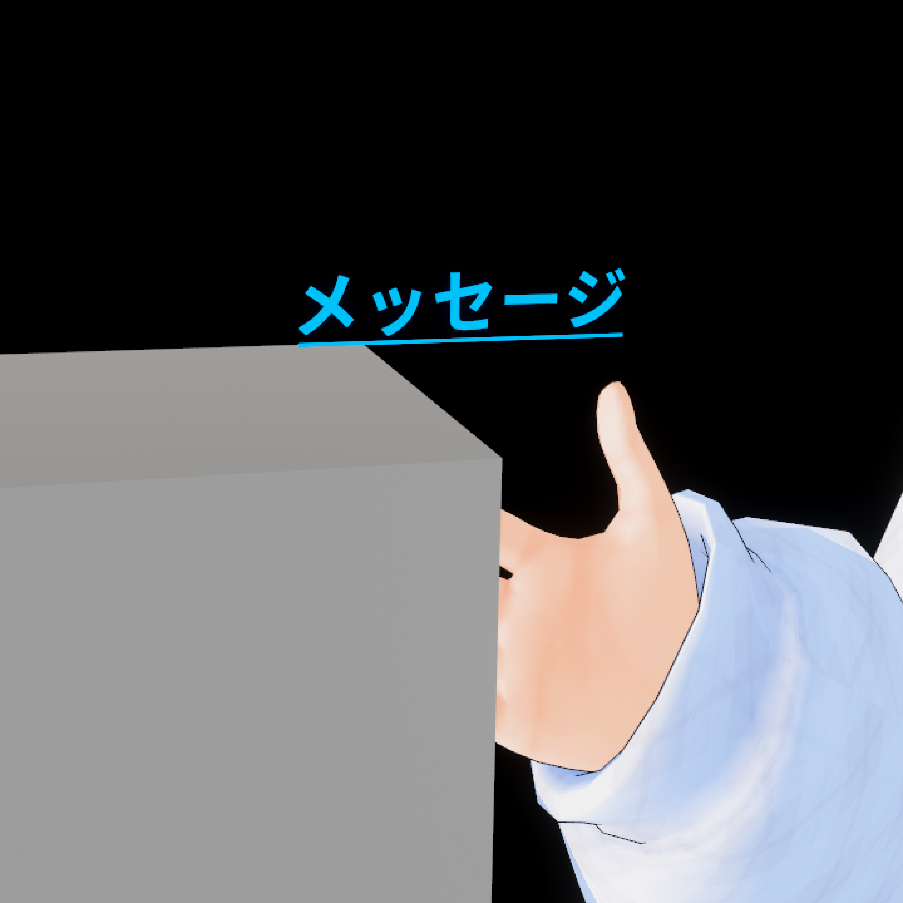

VCI UseDetails
VCIに触ると文章を表示させるVCIスクリプトと、
それを簡単に導入できるunitypackageがまとめてある商品です。
基本無料、BOOST版(支援版)のみ100円になります。
このページ一番下の各種ストアからダウンロードできます。
同梱物
※vXXXはバージョン名になります
- Read me.md
- licence.txt
- VCI_UseDetails_vXXX.unitypackage
- usedetails_vXXX.lua
- 【Sample】VCI_UseDetails_vXXX.vci
ライセンス
【サンプルVCI、Luaスクリプト】
CC0ライセンスの元公開します。
https://creativecommons.org/publicdomain/zero/1.0/deed.ja
データを再配布する場合に以下のデータが含まれる場合は、
以下のライセンスにも従う必要があります。
【UniVCI-0.24】
UniVCIは MIT License の元提供されています。
MIT License
Copyright (c) 2019 Virtual Cast, Inc.
https://github.com/virtual-cast/VCI/blob/master/LICENSE.txt
【Noto Sans CJK】
すべてのNotoフォントは、
SIL Open Font License, Version 1.1. の元公開されています。
NotoはGoogle Inc.の商標です。
https://scripts.sil.org/cms/scripts/page.php?site_id=nrsi&id=OFL